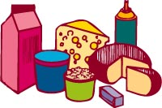

Food Guide
Grain Products
Vegetables & Fruits
Milk Products
Meat &
Alternatives
Source of Foods
Age and Exercise
Recommended servings: 5-12 per day.
Example serving: one slice of bread, 30g of cereal, 125 ml of cooked pasta or rice Grain products include the major cereals: wheat, oats, barley. Other Canadian products are corn, durum, buckwheat and wild rice. Most of these grains are grown locally in Saskatchewan and are readily available. Processed grains include: flour (white and whole wheat) hot and cold breakfast cereals (oatmeal, corn flakes) pasta (spaghetti, macaroni) bakery products (bread, bagels, cakes, cookies) Whole wheat flour is a source of B vitamins, iron and fibre. Canadian white flour is enriched with thiamin, riboflavin, niacin and iron so that all baked goods contain these nutrients. Pasta and breakfast cereals may be enriched with nutrients. Consumers should look for the word enriched on labels. Recommended servings: 5-10 per day.
Example serving: one medium apple or tomato, 125ml fresh frozen or canned vegetables or fruit, 125ml of juice The Food Guide promotes Vegetables & Fruit, particularly dark green and orange vegetables and orange fruit. Although most of us would prefer fresh produce, this is sometimes difficult to obtain during the winter months when imported fresh produce is expensive. Food processing, however, gives us alternatives; allowing us to enjoy nutritious food throughout the year. Drying, controlled atmosphere storage,canning and freezing are some of the processes designed to preserve our fruits and vegetables. Fresh and processed vegetables are sources of vitamins, minerals and fibre. Convenience foods offering fruits and vegetables may contain added fat. Consumers can check labels to make lower-fat choices more often.
 Milk Products Recommended servings:
Example serving: one 250 ml glass of milk, 50 g cheese, 175 g of yoghurt The Canadian Milk Industry supplies us with a wide variety of products:
Recommended servings: 2-3 per day.
Example serving: 50-100g meat, poultry or fish, 1-2 eggs, 125-250 ml of canned beans, 30 ml peanut butter. Canadians generally eat too much protein and too much fat. The recommended daily allowance for protein is only 40-60 g. Excess protein is converted to fat or excreted in the urine. Modern livestock breeding and meat processing has encouraged the production of lean meats. Sources of good quality meats and alternatives are available in grocery stores throughout the year:
Canadian foods are some of the best quality foods in the world. A rigorous inspection program guarantees that health risks from our produce is minimised. It is good advice to know where your food is coming from and what it contains. Read the label! To Identify Canadian Foods:
The amount and kind of food we need varies as we grow and age. Teenagers need extra nutrients to support the adolescent growth spurt, which begins in girls at ages 10 or 11, reaches its peak at age 12 and ends at about age 15. In boys, it begins at 12 or 13 years of age, peaks at 14 and ends at about 19. During this period of rapid growth, adequate amounts of iron and calcium are particularly important. From ages 11 to 24 years, both males and females should consume a calcium-rich diet (1,200 milligrams daily) in order to help ensure adequate calcium deposition in the bones during the age at which peak bone mass is attained. This may help reduce the incidence of osteoporosis in later years. Teens' caloric needs vary depending on their growth rate, degree of physical maturation, body composition and activity level. Overweight is one of the most serious nutrition problems of adolescents, particularly among Native Americans, Hispanics and low-income African-Americans.
Getting some "R and R", or rest and relaxation, can significantly lower the stress from work or studies. Surprisingly, the brain uses just as much energy when you are asleep, as when you are awake. But the other systems of the body enjoy a good rest as much as you do. Some of the physiological effects of relaxation are a slower heart rate,lower blood pressure, slower breathing and a drop in oxygen consumption. Periods of relaxation make people more alert and better able to perform well at work. |
 Then Relax
Then Relax